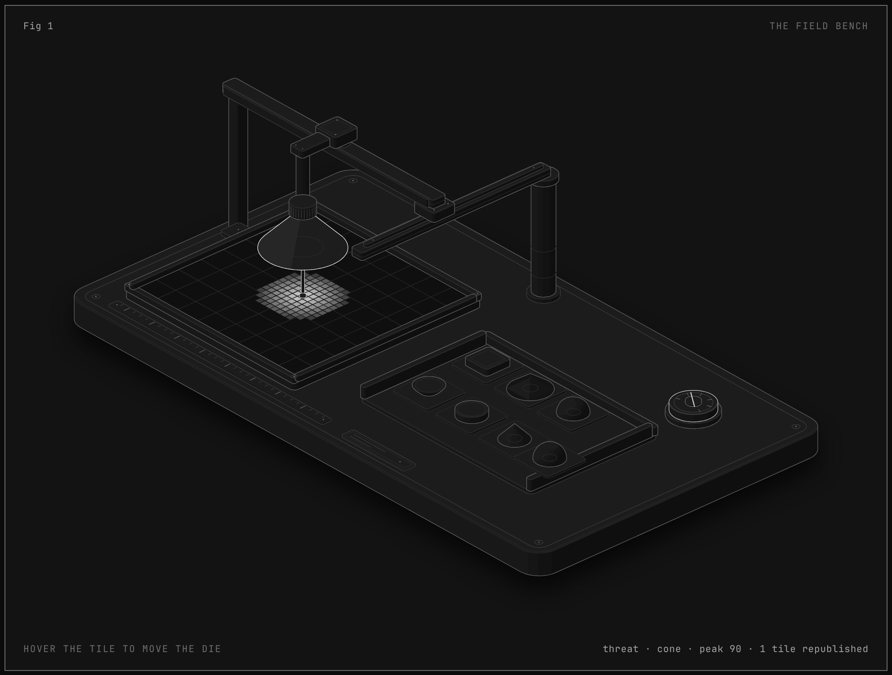
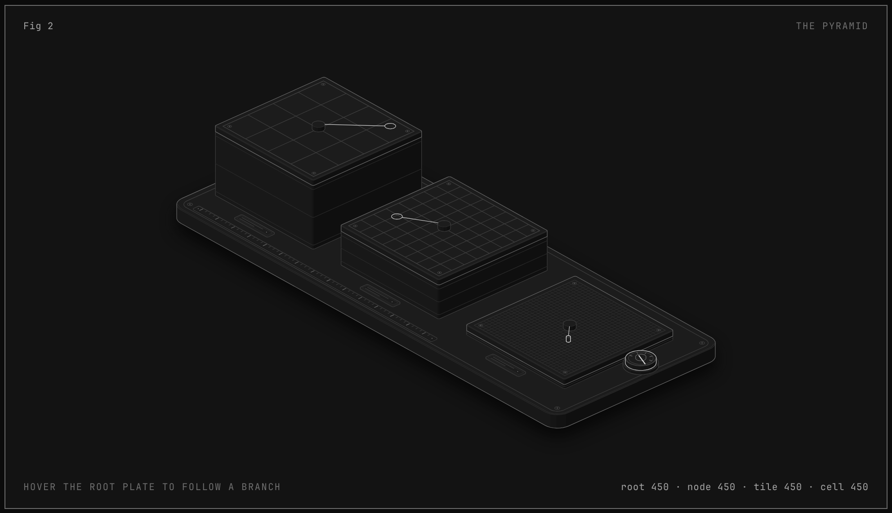
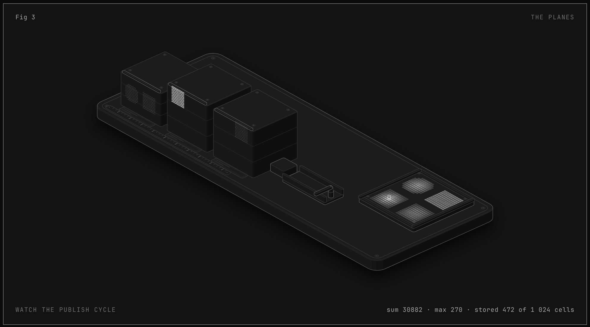
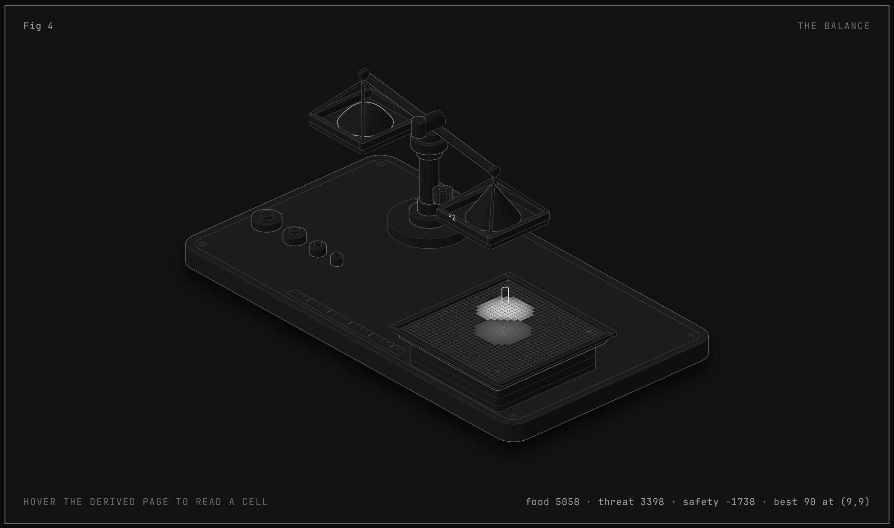

Anatomy of Gi
How the grid-influence algorithm works
Gi is a sparse tiled integer influence field for .NET. It never redraws the world: it redraws the tiles that changed, publishes them exactly, and answers queries by descending a hierarchy instead of scanning. These figures are that algorithm, drawn as machines — every number in them is produced by the library's own semantics.
The algorithm in five moves
- Place a source, change nothing. A source is a column: a position, a kernel, a gain. Placing or moving it writes that column and marks the slot on the changed list. No tile is touched, because a tile is only ever written by a publish. Fig 1
- Process: re-emit only what changed. Process compares each marked source against the 16-byte record of what it last deposited. Where the two differ it adds the negated old taps and the new taps. Integer adds commute, so any sequence of mutations collapses to the same field. Fig 1
- Publish: the planes become cells. A tile owns four planes. They are summed into the short cells only at publish, and the sum is taken after summation, so a deposit that cancels another leaves exactly zero. Only the cells that differ are stored. Fig 3
- Query: descend, never scan. A region sum adds one int64 per fully covered tile. A best-cell query descends a max pyramid: root, node, tile, cell. Eighty numbers and one 2 048 B page stand in for a million cells. Fig 2
- Combine: derived layers. A derived layer is a formula over other layers — food minus twice the threat. It is maintained only on the tiles whose inputs changed, and every query works on it as if it were any other layer. Fig 4
The figures
-
Fig 1

The field bench
A press that stamps a shaped die into one tile of the field. Moving the die changes nothing until the press cycles — then the old footprint is lifted exactly and only the touched tiles are republished.
the change-rate deposit cycle Fig 2
The pyramid
The grid is a ziggurat of tiles and nodes. A query for the best cell descends it instead of scanning, so 65 536 cells become a handful of reads.
how queries never scan Fig 3
The planes
Every tile owns four planes. Deposits land in the plane that suits their kernel, and the planes are summed into short cells only at publish time.
how a deposit becomes a cell Fig 4
The balance
A derived layer is a formula over other layers: food minus twice the threat. It is maintained only on the tiles whose inputs changed.
how channels combineWhat these are not
- They are not illustrations of an idea. Each figure is driven by a model of the library: the kernels are bit-exact against the dumps in Gi's README, and the field semantics are asserted against the library's own receipts.
- They are not a rendering of Gi's internals. Gi is a native, unmanaged, allocation-free library; these are isometric drawings of the same arithmetic, built with the Anatomy kit.
Source: github.com/IAFahim/grid-influence — the library these figures explain. The figures themselves live in github.com/IAFahim/gi-anatomy.